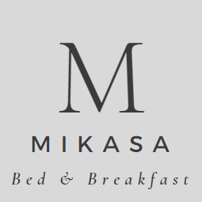

<mat-toolbar class="navbar-section">
  <div class="navbar-container">
    <button mat-fab color="accent" aria-label="Example icon button with a home icon">
      <mat-icon>home</mat-icon>
    </button>

    <div class="navbar-links">
      <a class="navbar-link" routerLink="/about">קצת עלינו</a>
      <a class="navbar-link" routerLink="/gallery">גלריית תמונות</a>
      
      <a class="navbar-link" routerLink="/gallery">שירותי אירוח</a>
      <button color="primary" mat-stroked-button [matMenuTriggerFor]="afterMenu" class="btn-menu">הסוויטות שלנו</button>
      <mat-menu #afterMenu="matMenu">
        <button style="width: 150px;" mat-menu-item>סוויטת יער</button>
        <button style="width: 150px;" mat-menu-item>סוויטת גשם</button>
      </mat-menu>
    </div>

    <button mat-raised-button color="accent" routerLink="/contact" class="btn-order">הזמן עכשיו</button>

  </div>
</mat-toolbar>